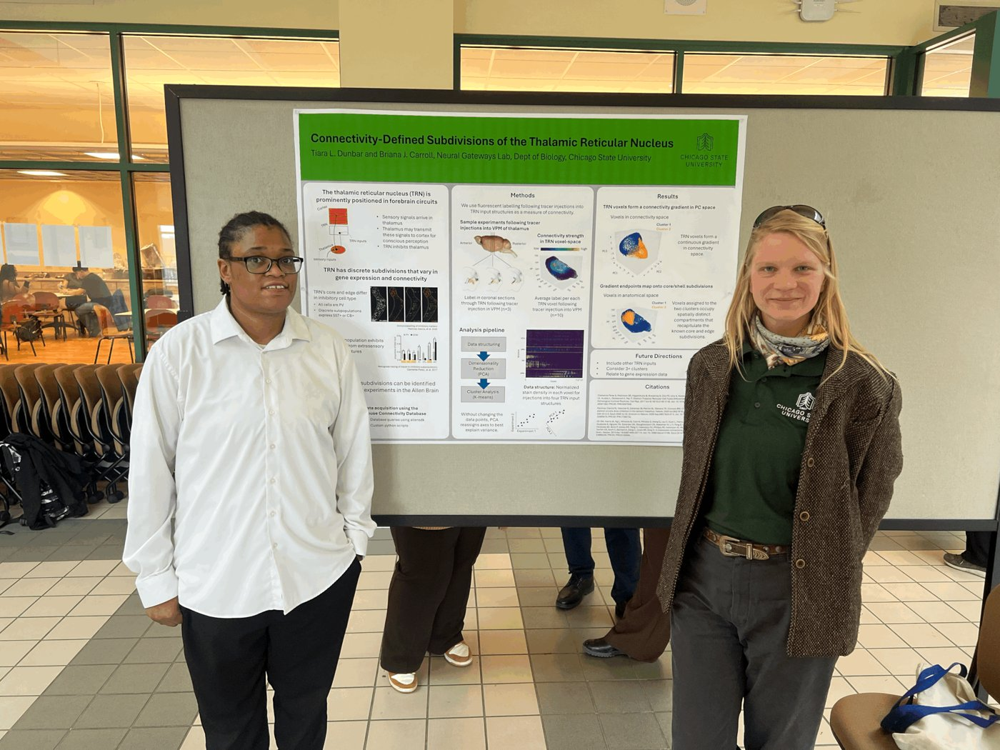

The Neural Gateways Lab investigates how forebrain circuits manage the flow and processing of sensory information. Focusing on circuits in thalamus and cortex, we use in-house and open-access datasets to elucidate their connectivity and functional interactions. The lab is a gateway — a place where curiosity opens doors for student researchers to build wet-lab and computational skills, practice scientific inquiry, and pursue STEM careers.
